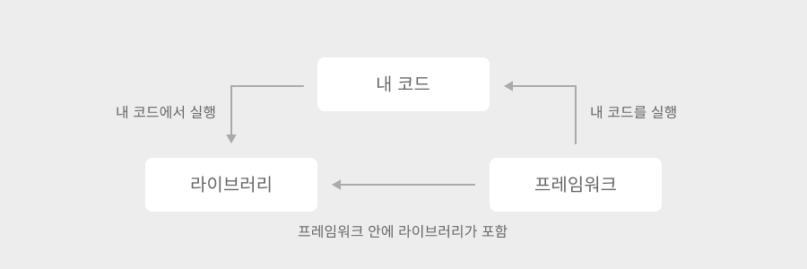
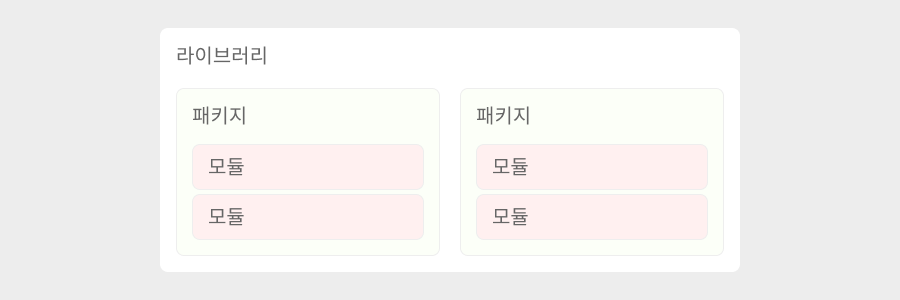

2023년 05월 02일
프레임워크, 라이브러리, 모듈, 패키지 개념 정리
Programing
Develop
프레임워크(Framework)와 라이브러리(Library)의 정확한 개념을 정리하고, 이 둘의 차이를 조금 더 확실하게 알기 위해서 다시한번 정리한 내용이다.
추가로 라이브러리와 혼동되는 패키지(Package)와 모듈(Modeul)에 대해서도 라이브러이와 함께 정리하여 작성하였습니다.
프레임워크(Frmaework)?
💬 프레임워크
복잡한 문제를 해결하거나 서술하는 데 사용되는 기본 개념 구조이다.
-위키백과-
간단 정의
- 뼈대 또는 기반구조
- 제어의 역전 개념이 적용된 대표 기술
조금 더 깊이..
- 애플리케이션 개발 시 필요한 코드, 알고리즘, 필수 기능 구현을 위해 어느정도의 구조를 제공해주는 것.
- 프레임워크만으로 프로그램이 동작하지 않고, 뼈대 위에 개발자가 코드를 올려 동작
- 객체 지향 개발 시 발생할 수 있는 통합성, 일관성의 문제를 해결해주는 방법 중 하나
라이브러리(Library)?
💬 라이브러리
소프트웨어를 개발할 때 컴퓨터 프로그램이 사용하는 비휘발성 자원의 모임이다.
-위키백과-
간단 정의
- 활용이 가능한 도구들의 집합
조금 더 깊이..
- 재사용이 가능한 기능들을 미리 구현한 집합을 필요한 곳에서 호출해서 사용하도록 만들어진 도구
프레임워크와 라이브러리
프레임워크와 라이브러리의 공통점
- 개발 시 쉽고 빠른 생산성을 위해 사용
- 다른 사람이 작성한 코드를 가져와서 사용
프레임워크와 라이브러리의 차이점

- 프레임워크
- 애플리케이션의 전체적인 흐름을 주도
- 내가 작성한 코드를 프레임워크가 호출함으로써 작동
- 라이브러리
- 애플리케이션에서 필요한 경우에 호출하여 사용
- 내 코드에서 라이브러리를 호출함으로써 사용
모듈(Module)과 패키지(Package)와 라이브러리

모듈(Module)?
- 함수, 변수, 클래스를 모아놓은 것
패키지(Package)?
- 특정 기능과 관련된 여러 모듈을 모아놓은 한 폴더
라이브러리?
- 패키지와 모듈을 모아놓은 것
잘못된 정보의 비판은 언제든 환영입니다.